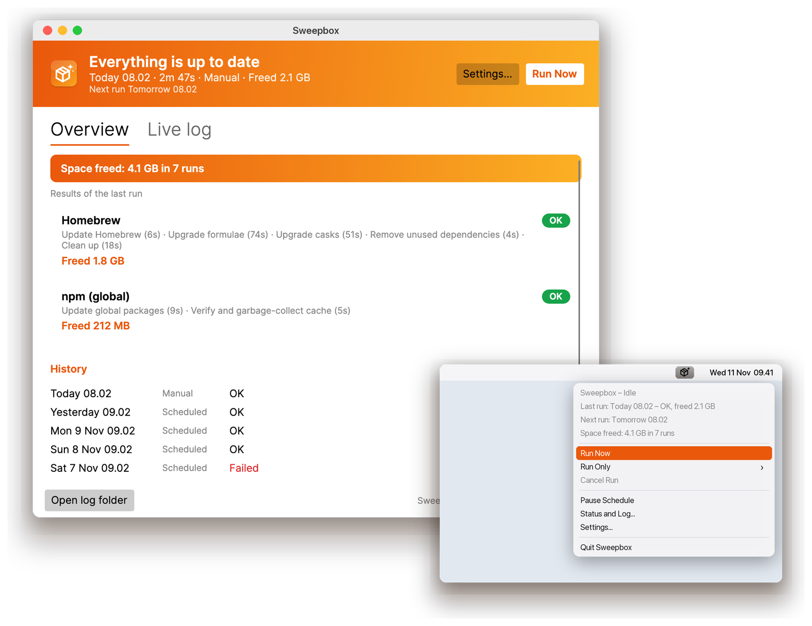

See the space you win back
Every clean-up step measures the caches and old versions before and after: per manager, per run, and as a running total.
4.1 GB freed this week
Sweepbox updates Homebrew, Chocolatey and npm on a schedule, clears out old versions and caches, and tells you how much space it won back. It lives in your menu bar or tray.
Free, open source (GPL-3.0). Other platforms · All releases

brew upgrade ritual.A small, quiet app that does the boring maintenance on time and keeps a record of what happened.
Every clean-up step measures the caches and old versions before and after: per manager, per run, and as a running total.
Every few hours, daily or weekly. Missed a run while asleep? It catches up shortly after wake.
Status at a glance: idle, running, failed. Run now, run one manager, pause, or open the log.
No hidden prompts: anything that wants a password fails fast and is reported, and every step has a timeout.
Reads your shell's PATH, so Homebrew, nvm, fnm and Volta installs just work, even when started from Finder.
$ Sweepbox --dry-run
Greedy cask upgrades, full cache prune, Chocolatey exceptions, npm cache verify or clear: switch each step on or off.
GPL-3.0 licensed, built with .NET and Avalonia. No accounts, no telemetry: it only runs your package managers.
Drag the app into Applications, or run the Windows installer. No admin rights needed.
Settings open on first start: choose the interval and which update and clean-up steps to run.
Sweepbox runs in the background, notifies you if something fails, and keeps a log of every run.
Homebrew and npm on macOS, Chocolatey and npm on Windows. Light and dark mode included.


Pick your platform. Downloads come straight from the latest GitHub release.
See all files and release notes on GitHub.